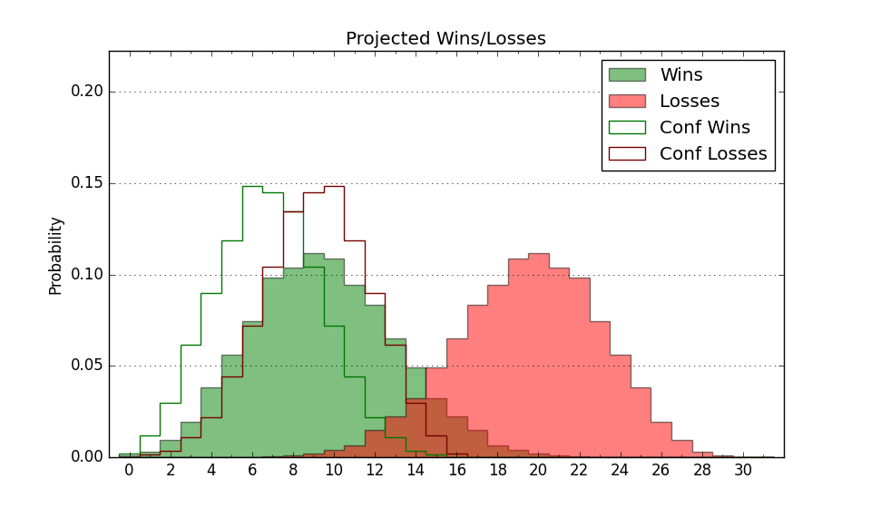

| Home | Game Probabilities | Conferences | Preseason Predictions | Odds Charts | NCAA Tournament |
| City: | DeWitt, New York | |
| Conference: | Northeast (4th)
| |
| Record: | 10-9 (Conf) 14-17 (Overall) | |
| Ratings: | Comp.: -13.4 (302nd) Net: -13.4 (302nd) Off: 101.8 (300th) Def: 115.2 (288th) SoR: 0.0 (97th) |
| Remaining | ||||||
|---|---|---|---|---|---|---|
| Date | Opponent | Win Prob | Pred. | |||
| Previous | Game Score | |||||
| Date | Opponent | Win Prob | Result | Off | Def | Net |
| 11/6 | @Xavier (99) | 6.0% | L 69-74 | 3.4 | 18.4 | 21.8 |
| 11/9 | @Bowling Green (170) | 13.0% | L 60-83 | -10.7 | -2.5 | -13.2 |
| 11/13 | @Massachusetts (214) | 18.1% | L 80-94 | 7.9 | -4.3 | 3.6 |
| 11/17 | Niagara (346) | 82.2% | W 74-68 | -6.4 | -7.4 | -13.8 |
| 11/22 | Fairfield (264) | 55.2% | L 83-97 | 7.9 | -30.2 | -22.2 |
| 11/28 | @Lafayette (322) | 44.4% | W 76-63 | 4.3 | 17.1 | 21.4 |
| 11/29 | (N) Monmouth (164) | 20.8% | W 83-79 | 24.4 | -6.0 | 18.4 |
| 11/30 | (N) Ball St. (299) | 49.4% | L 85-96 | 29.8 | -34.8 | -5.0 |
| 12/6 | @Binghamton (361) | 73.3% | W 78-63 | 7.1 | 11.0 | 18.1 |
| 12/16 | @Texas (39) | 1.8% | L 53-95 | -21.7 | 4.6 | -17.1 |
| 12/20 | @St. Bonaventure (149) | 10.9% | L 81-92 | 16.4 | -17.6 | -1.2 |
| 12/28 | @Boston College (147) | 10.8% | L 64-72 | -4.7 | 9.5 | 4.8 |
| 1/2 | @St. Francis PA (355) | 63.2% | W 84-58 | 12.5 | 19.0 | 31.4 |
| 1/4 | @Mercyhurst (276) | 29.8% | L 60-74 | -9.0 | -10.8 | -19.8 |
| 1/8 | New Haven (323) | 73.2% | W 73-47 | 12.2 | 20.3 | 32.5 |
| 1/10 | Central Connecticut (306) | 66.7% | L 59-69 | -31.0 | 7.6 | -23.4 |
| 1/17 | @Chicago St. (342) | 55.6% | W 72-57 | -5.0 | 23.7 | 18.7 |
| 1/19 | LIU Brooklyn (212) | 42.8% | W 83-77 | 15.6 | 1.7 | 17.3 |
| 1/23 | Wagner (308) | 67.3% | W 69-67 | 2.5 | -5.9 | -3.4 |
| 1/26 | @Fairleigh Dickinson (332) | 50.0% | W 87-74 | 26.6 | -2.4 | 24.2 |
| 1/29 | @LIU Brooklyn (212) | 18.0% | L 61-83 | -16.5 | 4.4 | -12.1 |
| 1/31 | Stonehill (328) | 74.1% | L 54-65 | -30.0 | 1.7 | -28.3 |
| 2/5 | @Wagner (308) | 37.7% | L 78-79 | 8.7 | -5.1 | 3.6 |
| 2/7 | St. Francis PA (355) | 85.4% | W 86-84 | -5.1 | -9.8 | -14.9 |
| 2/12 | Mercyhurst (276) | 59.1% | W 58-57 | -24.4 | 18.3 | -6.0 |
| 2/14 | Chicago St. (342) | 81.0% | W 81-63 | 4.4 | 10.6 | 15.0 |
| 2/19 | @Central Connecticut (306) | 37.1% | L 77-78 | 3.0 | 4.0 | 7.0 |
| 2/21 | @Stonehill (328) | 45.7% | L 68-77 | -2.7 | -11.5 | -14.2 |
| 2/26 | Fairleigh Dickinson (332) | 77.3% | W 76-59 | 5.7 | 9.8 | 15.5 |
| 2/28 | @New Haven (323) | 44.5% | L 59-66 | -14.7 | 6.4 | -8.4 |
| 3/4 | Stonehill (328) | 74.1% | L 71-81 | -3.6 | -21.0 | -24.6 |
| Stats & Trends | |||||
|---|---|---|---|---|---|
| Current | Day | Week | Month | Season | |
| Composite | -13.4 | -0.0 | +0.0 | -0.4 | +6.2 |
| Comp Rank | 302 | -1 | -- | -6 | +48 |
| Net Efficiency | -13.4 | -0.0 | +0.0 | -0.5 | -- |
| Net Rank | 302 | -1 | -- | -6 | -- |
| Off Efficiency | 101.8 | +0.0 | +0.1 | -1.2 | -- |
| Off Rank | 300 | -1 | -3 | -29 | -- |
| Def Efficiency | 115.2 | -0.0 | -0.1 | +0.7 | -- |
| Def Rank | 288 | -1 | -1 | +10 | -- |
| SoS Rank | 352 | -- | +1 | -4 | -- |
| Exp. Wins | 14.0 | -- | -- | -0.5 | +5.1 |
| Exp. Conf Wins | 10.0 | -- | -- | -0.5 | +3.9 |
| Conf Champ Prob | 0.0 | -- | -- | -0.1 | -4.1 |

| Advanced Stats | ||
|---|---|---|
| Stat | Value | Rank |
| Off Eff FG % | 0.504 | 212 |
| Off Ast Ratio | 0.144 | 197 |
| Off ORB% | 0.244 | 332 |
| Off TO Rate | 0.179 | 349 |
| Off FT Ratio | 0.375 | 131 |
| Def Eff FG % | 0.523 | 211 |
| Def Ast Ratio | 0.161 | 279 |
| Def ORB% | 0.317 | 242 |
| Def TO Rate | 0.122 | 332 |
| Def FT Ratio | 0.371 | 230 |